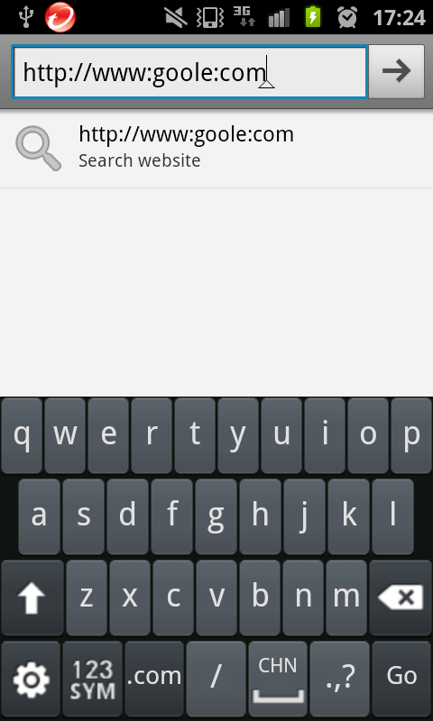

發現 type() 不能輸入中文、空白、或 ^ 時都會失敗。
MonkeyManager.java - 由於背後的 protocol，大概可以看出為什麼
public boolean type(String text) throws IOException {
// The network protocol can't handle embedded line breaks, so we have to handle it
// here instead
StringTokenizer tok = new StringTokenizer(text, "\n", true);
while (tok.hasMoreTokens()) {
String line = tok.nextToken();
if ("\n".equals(line)) {
boolean success = press(PhysicalButton.ENTER);
if (!success) {
return false;
}
} else {
boolean success = sendMonkeyEvent("type " + line);
if (!success) {
return false;
}
}
}
return true;
}I/XT9_CIME_J( 1737): [onKeyDown]: keyCode=70b0003 ← 好，但要怎麼傳進 monkeyrunner 最後轉化成 "type xxxx" 或 "press xxx"
發現 device.press(KEYCODE_SPACE, MonkeyDevice.DOWN_AND_UP) 可以送出空白字元，顯然 MonkeyDevice.type() 需要被 enhance!!
2012-05-18 在 Galax Nexus 上發現 type() 會被帶出來的 software keyword 吃去（反應會因當下鍵盤是中文／英文而異），使得敲進去的字都變成小寫，或是被誤以為在拼寫中文字… 還好只要按 back 將 software keyboard 收回去，就不會有上述的狀況了。
2012-07-22 在 HTC Desire S 測試，type() 不會受到當時用什麼輸入法所影響。
2012-09-19 在 Galaxy S2 上測試發現，輸入 http://www.google.com 會變成 http://www:google:com：

按下 123SYM 切換輸入法後，重新再輸入一次就沒問題了。